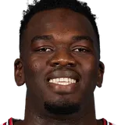

Played 2 seasons for 1 team; his teams went 5–8 in his games.
Jump to: Record by opponent · Season by season · Teammate help
Compare Adama Sanogo with…
Final NBA finish, season by season
Title Finals Other playoffs Missed playoffs. #1 = champion; the dashed line is last place that season. Each point opens that season's final standings.
All 30 teams ranked in 2024-25, his best finish (#19)Teammate help
 Alex Caruso0.51 season
Alex Caruso0.51 season Matas Buzelis0.11 season
Matas Buzelis0.11 season
Career
Career records (W–L, W − L, with and without) include 2026-27 games through Nov. 21, 2026; season counts and finishes are through 2025-26. Each card opens its board in the same scope. How we count.

Latest completed seasons
Season by season
Newest first; every header sorts. Final NBA finish is the team's rank among all teams that season (#1 = champion) and opens that season's standings. "Without him" uses the team-season window; the span line counts only the games between his first and last game for the team.
On/off, starts and close games
From the lineup data, 1996-97 on. On/off is net points per 100 possessions with him on the floor minus off, a different unit from the win-rate gaps. Started and off the bench are team records in those games; close games are those within 5 points in the last 5 minutes with him on the floor.
Teammate help by season
Two separate numbers per season, each with every teammate that adds to it. Help this season = Teammates Score points for honors won that season by teammates who shared a game with him. Help coming in = the same teammates' honors from the season before. How help works.
- 2024-25
 Chicago
Matas Buzelis All-Rookie 2nd0.1253 g
Chicago
Matas Buzelis All-Rookie 2nd0.1253 g
Help this season: 0.125 = 0.125 Matas Buzelis
More: help coming in and other teammates
Help coming in (teammates' honors the season before): 0
Other teammates (no honors that season): Zach LaVine 4 g, Julian Phillips 4 g, Josh Giddey 4 g, Ayo Dosunmu 4 g, Patrick Williams 4 g, Coby White 4 g, Nikola Vucevic 3 g, Dalen Terry 3 g, Talen Horton-Tucker 3 g, Jalen Smith 2 g, Torrey Craig 1 g, Lonzo Ball 1 g
- 2023-24Chicago
Alex Caruso All-Def 2nd0.57 g
Help this season: 0.5 = 0.5 Alex Caruso
More: help coming in and other teammates
Help coming in (teammates' honors the season before): 2 = 1 DeMar DeRozan + 1 Alex Caruso
Other teammates (no honors that season): Dalen Terry 9 g, DeMar DeRozan 8 g, Coby White 8 g, Jevon Carter 8 g, Andre Drummond 7 g, Ayo Dosunmu 6 g, Torrey Craig 6 g, Nikola Vucevic 5 g, Onuralp Bitim 5 g, Terry Taylor 5 g, Andrew Funk 4 g, Javonte Green 4 g, Julian Phillips 3 g, Henri Drell 3 g and 1 more
Record against each opponent
Regular season, through 2025-26 (2026-27 games not included): 13 games, 5–8, against 10 franchises.
Grouped by franchise (named as today); game lists keep each team's name that season. Filters and the tab are kept in the URL, so a filtered view can be shared.
| Games list | |||||||
|---|---|---|---|---|---|---|---|
| 2 | 0–2 | 0.0% | −2 | N/A | 2023-24 | ||
| 2 | 1–1 | 50.0% | 0 | N/A | 2023-24 to 2024-25 | ||
| 2 | 2–0 | 100.0% | +2 | N/A | 2023-24 | ||
| 1 | 0–1 | 0.0% | −1 | N/A | 2023-24 | ||
| 1 | 0–1 | 0.0% | −1 | N/A | 2024-25 | ||
| 1 | 1–0 | 100.0% | +1 | N/A | 2024-25 | ||
| 1 | 0–1 | 0.0% | −1 | N/A | 2024-25 | ||
| 1 | 1–0 | 100.0% | +1 | N/A | 2023-24 | ||
| 1 | 0–1 | 0.0% | −1 | N/A | 2023-24 | ||
| 1 | 0–1 | 0.0% | −1 | N/A | 2023-24 |
Rows add up to his career record in his games. A playoff series counts when he played in it; early round-robin games show as games only. How we count.
Arrival and departure
Team wins per 82 games the season before he arrived vs his first season there, and his last season vs the season after he left. He leaves a team only when his next season with games is for another team (or he never plays again); whole seasons he missed and came back from are one "Missed" row with the team's record without him. Per 82 so short seasons compare fairly. These are team records, not a measure of what he did.